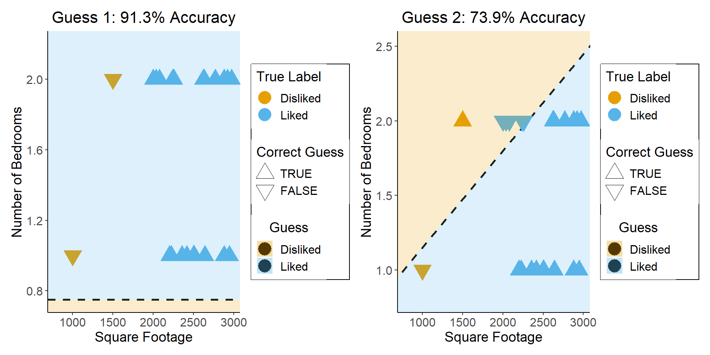

Supervised Learning with Parametric Models
Georgetown University, April 2023
Supervised vs. Unsupervised Learning
- Supervised Learning: You want the computer to learn the pattern of how you are classifying1 observations in a dataset
- Discovering the relationship between properties of data and outcomes
- Example (Binary Classification): I look at homes on Zillow, saving those I like to folder A and don’t like to folder B
- Example (Regression): I assign a rating of 0-100 to each home
- In both cases: I ask the computer to learn my preferences (how I classify/assign ratings to homes)
- Unsupervised Learning: You want the computer to find patterns in a dataset, without any classification info
- Typically: grouping or clustering observations based on shared properties
- Example (Clustering): I save all the used car listings I can find, and ask the computer to “find a pattern” in this data, by clustering similar cars together
- “Exploratory” Data Analysis (Tukey 1977)
Dataset Structures
- Supervised Learning: Dataset has both explanatory variables (“features”) and response variables (“labels”)
| home_id | sqft | bedrooms | rating |
|---|---|---|---|
| 0 | 1000 | 1 | Disliked |
| 1 | 2000 | 2 | Liked |
| 2 | 2500 | 1 | Liked |
| 3 | 1500 | 2 | Disliked |
| 4 | 2200 | 1 | Liked |
- Unsupervised Learning: Dataset has only explanatory variables
| home_id | sqft | bedrooms |
|---|---|---|
| 0 | 1000 | 1 |
| 1 | 2000 | 2 |
| 2 | 2500 | 1 |
| 3 | 1500 | 2 |
| 4 | 2200 | 1 |
Dataset Structures: Visualized
Different Goals

The “Learning” in Machine Learning
- Given these datasets, how do we learn the patterns?
- Naïve idea: Try random lines (each forming a decision boundary), pick “best” one
What Makes a ‚ÄúGood‚Äù/‚ÄúBest‚Äù Guess? ü§î
- What’s your intuition? How about accuracy…
So… what’s wrong here?
What’s Wrong with Accuracy?
Measuring Errors: F1 Score
- How can we reward guesses which best discriminate between classes?
\[ \begin{align*} \mathsf{Precision} &= \frac{\# \text{true positives}}{\# \text{predicted positive}} = \frac{tp}{tp+fp} \\[1.5em] \mathsf{Recall} &= \frac{\# \text{true positives}}{\# \text{positives in data}} = \frac{tp}{tp+fn} \\[1.5em] F_1 &= 2\frac{\mathsf{Precision} \cdot \mathsf{Recall}}{\mathsf{Precision} + \mathsf{Recall}} = \mathsf{HMean}(\mathsf{Precision}, \mathsf{Recall}) \end{align*} \]
- How does this fix the issue with accuracy?
Measuring Errors: The Loss Function
- What about the regression case?
- We can no longer just say “true prediction good, false prediction bad”
- We have to quantify how bad the guess is!
- Then we can scale the penalty accordingly: \(penalty \propto badness\)
- Some common loss functions \[ \mathcal{L}(y_{pred}, y_{obs}) = (y_{pred} - y_{obs})^2 \]
Calculus Rears its Ugly Head
- Neural networks use gradient descent and backpropagation to improve their predictions given a particular loss function.
- Can we just use the \(F_1\) score? \[ \frac{\partial F_1(weights)}{\partial weights} = \ldots \; ? \; \ldots üíÄ \]
Quantifying Discrete Loss
- We can quantify a differentiable discrete loss by asking the algorithm how confident it is
- Closer to 0 \(\implies\) more confident that the true label is 0
- Closer to 1 \(\implies\) more confident that the true label is 1 \[ \mathcal{L}_{CE}(y_{pred}, y_{obs}) = -(y_{obs}\log(y_{pred}) + (1-y_{obs})\log(1-y_{pred})) \]
Loss Function \(\implies\) Ready to Learn!
Once we’ve chosen a loss function, the learning algorithm has what it needs to proceed with the actual learning
Notation: Bundle all the model’s parameters together into \(\theta\)
The goal: \[ \min_{\theta} \mathcal{L}(y_{obs}, y_{pred}(\theta)) \]
How do we solve this?
Calculus Strikes Again
- tldr: The slope of a function tells us how to get to a minimum (why a minimum rather than the minimum?)
- Derivative (gradient) = “direction of sharpest decrease”
- Think of hill climbing! Let \(\ell_t \in L\) be your location at time \(t\), and \(Alt(\ell)\) be the altitude at a location \(\ell\)
- Gradient descent for \(\ell^* = \max_{\ell \in L} Alt(\ell)\): \[ \ell_{t+1} = \ell_t + \gamma\nabla Alt(\ell_t),\ t\geq 0. \]
- While top of mountain = good, Loss is bad: we want to find the bottom of the “loss crater”
- \(\implies\) we do the opposite: subtract \(\gamma\nabla Alt(\ell_t)\)
Good and Bad News
- Universal Approximation Theorem
- Neural networks can represent any function mapping one Euclidean space to another
- (Neural Turing Machines:)
- Weierstrass Approximation Theorem
- (Polynomials could already represent any function)
\[ f \in C([a,b],[a,b]) \] \[ \implies \forall \epsilon > 0, \exists p \in \mathbb{R}[x] : \] \[ \forall x \in [a, b] \; \left|f(x) − p(x)\right| < \epsilon \]
- Implications for machine learning?
So What’s the Issue?
Generalization
- Training Accuracy: How well does it fit the data we can see?
- Test Accuracy: How well does it generalize to future data?
How to Avoid Overfitting?
- The gist: penalize model complexity
Original optimization: \[ \min_{params} \mathcal{L}(y_{obs}, y_{pred}(params)) \]
New optimization: \[ \min_{\theta} \left[ \mathcal{L}(y_{obs}, y_{pred}(\theta)) + \mathsf{Complexity}(\theta) \right] \]
- So how do we measure, and penalize, “complexity”?
Regularization: Measuring and Penalizing Complexity
- In the case of polynomials, fairly simple complexity measure: degree of polynomial
\[ \mathsf{Complexity}(y_{pred} = \beta_0 + \beta_1 x + \beta_2 x^2 + \beta_3 x^3) > \mathsf{Complexity}(y_{pred} = \beta_0 + \beta_1 x) \]
- In general machine learning, however, we might not be working with polynomials
- In neural networks, for example, we sometimes toss in millions of features and ask the algorithm to “just figure it out”
- The gist, in the general case, is thus: try to “amplify” the most important features and shrink the rest, so that
\[ \mathsf{Complexity} \propto \frac{|\text{AmplifiedFeatures}|}{|\text{ShrunkFeatures}|} \]
LASSO and Elastic Net Regularization
- Many ways to translate this intuition into math!
- In several fields, however (econ, biostatistics), LASSO1 (Tibshirani 1996) is standard:
\[ \beta^*_{LASSO} = {\underset{\beta}{\operatorname{argmin}}}\left\{{\frac {1}{N}}\left\|y-X\beta \right\|_{2}^{2}+\lambda \|\beta \|_{1}\right\} \]
- Why does this work to penalize complexity? What does the parameter \(\lambda\) do?
- Some known issues with LASSO fixed in extension of the same intuitions: Elastic Net
\[ \beta^*_{EN} = {\underset {\beta }{\operatorname {argmin} }}\left\{ \|y-X\beta \|^{2}_2+\lambda _{2}\|\beta \|^{2}+\lambda _{1}\|\beta \|_{1} \right\} \]
- (Ensures a unique global minimum! Note that \(\lambda_2 = 0, \lambda_1 = 1 \implies \beta^*_{LASSO} = \beta^*_{EN}\))
Training vs. Test Data
Cross-Validation
- The idea that good models generalize well is crucial!
- What if we could leverage this insight to optimize over our training data?
- The key: Validation Sets
Hyperparameters
- The unspoken (but highly consequential!) “settings” for our learning procedure (that we haven’t optimized via gradient descent)
- There are several we’ve already seen – can you name them?
- Unsupervised Clustering: The number of clusters we want (\(K\))
- Gradient Descent: The step size \(\gamma\)
- LASSO/Elastic Net: \(\lambda\)
- The train/validation/test split!
Hyperparameter Selection
- Every model comes with its own hyperparameters:
- Neural Networks: Number of layers, number of nodes per layer
- Decision Trees: Maximum tree depth, max number of features to include
- Topic Models: Number of topics, document/topic priors
- So, how do we choose?
- Often more art than science
- Principled, universally applicable, but slow: grid search
- Specific methods for specific algorithms: ADAM (Kingma and Ba 2017) for Neural Network learning rates)
…Now What?
- So we’ve got a trained model…
- Data collected ✅
- Loss function chosen ✅
- Gradient descent complete ✅
- Hyperparameters tuned ✅
- Good \(F_1\) score on test data ✅
- What’s our next step?
- This is where engineers and social scientists diverge…
Prediction vs. Explanation: Prediction
- Intro CS courses: Prediction
- Netflix Prize: Predict a user’s next rating given previous ratings
- Neural networks: They just, like, work! (ChatGPT, Google Translate, …)
Prediction vs. Explanation: Explanation
- Intro Social Science courses: Explanation
- Criteria for success: What does this parameter mean? Is it statistically significant? What is the mechanism?
A Symbiotic Relationship
- Computer scientists: great strides in explainable machine learning
- Meanwhile, social scientists are increasingly incorporating prediction tasks into their explanatory models
- Double Machine Learning approach to estimating causal effects (Chernozhukov et al. 2018)
- Microsoft’s EconML
Lab
- What are the keys to success in the NBA?
| season | team_abbreviation | age | player_height | player_weight | po_year | team_full | playoffs | year_team | Team | PtsSeason | OppPtsSeason | Reb | Ast | Stl | Blk | To | Pf | Dreb | Oreb | PtsDiff |
|---|---|---|---|---|---|---|---|---|---|---|---|---|---|---|---|---|---|---|---|---|
| 1997-98 | ATL | 28.25000 | 199.2312 | 99.16655 | 1998 | Atlanta Hawks | TRUE | 1998_Atlanta Hawks | Atlanta | 95.9 | 92.3 | 42.8 | 19.0 | 8.0 | 5.9 | 14.0 | 20.5 | 29.5 | 13.4 | 3.6 |
| 1997-98 | BOS | 25.85714 | 200.2971 | 95.02752 | 1998 | Boston Celtics | FALSE | 1998_Boston Celtics | Boston | 95.9 | 98.5 | 39.5 | 22.1 | 12.0 | 4.5 | 15.6 | 26.9 | 24.9 | 14.6 | -2.6 |
| 1997-98 | CHH | 29.73333 | 200.8293 | 101.75581 | 1998 | Charlotte Hornets | TRUE | 1998_Charlotte Hornets | Charlotte | 96.6 | 94.6 | 40.1 | 23.4 | 8.2 | 3.7 | 14.4 | 21.4 | 28.4 | 11.7 | 2.0 |
| 1997-98 | CHI | 30.60000 | 201.3373 | 103.69113 | 1998 | Chicago Bulls | TRUE | 1998_Chicago Bulls | Chicago | 96.7 | 89.6 | 44.1 | 23.1 | 8.6 | 4.3 | 13.0 | 21.1 | 29.2 | 14.9 | 7.1 |
| 1997-98 | CLE | 26.37500 | 199.2312 | 96.75684 | 1998 | Cleveland Cavaliers | TRUE | 1998_Cleveland Cavaliers | Cleveland | 92.5 | 89.8 | 39.8 | 22.9 | 9.9 | 5.0 | 16.6 | 23.7 | 28.2 | 11.6 | 2.7 |
| 1997-98 | DAL | 26.25000 | 201.9300 | 101.51956 | 1998 | Dallas Mavericks | FALSE | 1998_Dallas Mavericks | Dallas | 91.4 | 97.5 | 40.1 | 18.7 | 7.9 | 5.6 | 13.5 | 20.0 | 27.8 | 12.3 | -6.1 |
- Download data here (
nba_data_full.csv)- Train neural net
- Best predictor wins a prize!